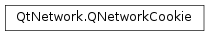

QNetworkCookie¶
Synopsis¶
Functions¶
- def
__eq__(other) - def
__ne__(other) - def
domain() - def
expirationDate() - def
hasSameIdentifier(other) - def
isHttpOnly() - def
isSecure() - def
isSessionCookie() - def
name() - def
normalize(url) - def
path() - def
setDomain(domain) - def
setExpirationDate(date) - def
setHttpOnly(enable) - def
setName(cookieName) - def
setPath(path) - def
setSecure(enable) - def
setValue(value) - def
swap(other) - def
toRawForm([form=Full]) - def
value()
Static functions¶
- def
parseCookies(cookieString)
Detailed Description¶
The
PySide2.QtNetwork.QNetworkCookieclass holds one network cookie.Cookies are small bits of information that stateless protocols like HTTP use to maintain some persistent information across requests.
A cookie is set by a remote server when it replies to a request and it expects the same cookie to be sent back when further requests are sent.
PySide2.QtNetwork.QNetworkCookieholds one such cookie as received from the network. A cookie has a name and a value, but those are opaque to the application (that is, the information stored in them has no meaning to the application). A cookie has an associated path name and domain, which indicate when the cookie should be sent again to the server.A cookie can also have an expiration date, indicating its validity. If the expiration date is not present, the cookie is considered a “session cookie” and should be discarded when the application exits (or when its concept of session is over).
PySide2.QtNetwork.QNetworkCookieprovides a way of parsing a cookie from the HTTP header format using theQNetworkCookie.parseCookies()function. However, when received in aPySide2.QtNetwork.QNetworkReply, the cookie is already parsed.This class implements cookies as described by the initial cookie specification by Netscape, which is somewhat similar to the RFC 2109 specification, plus the “HttpOnly” extension. The more recent RFC 2965 specification (which uses the Set-Cookie2 header) is not supported.
-
class
PySide2.QtNetwork.QNetworkCookie([name=QByteArray()[, value=QByteArray()]])¶ -
class
PySide2.QtNetwork.QNetworkCookie(other) Parameters: - value –
PySide2.QtCore.QByteArray - other –
PySide2.QtNetwork.QNetworkCookie - name –
PySide2.QtCore.QByteArray
Create a new
PySide2.QtNetwork.QNetworkCookieobject, initializing the cookie name tonameand its value tovalue.A cookie is only valid if it has a name. However, the value is opaque to the application and being empty may have significance to the remote server.
Creates a new
PySide2.QtNetwork.QNetworkCookieobject by copying the contents ofother.- value –
-
PySide2.QtNetwork.QNetworkCookie.RawForm¶ This enum is used with the
PySide2.QtNetwork.QNetworkCookie.toRawForm()function to declare which form of a cookie shall be returned.Constant Description QNetworkCookie.NameAndValueOnly makes PySide2.QtNetwork.QNetworkCookie.toRawForm()return only the “NAME=VALUE” part of the cookie, as suitable for sending back to a server in a client request’s “Cookie:” header. Multiple cookies are separated by a semi-colon in the “Cookie:” header field.QNetworkCookie.Full makes PySide2.QtNetwork.QNetworkCookie.toRawForm()return the full cookie contents, as suitable for sending to a client in a server’s “Set-Cookie:” header.Note that only the Full form of the cookie can be parsed back into its original contents.
-
PySide2.QtNetwork.QNetworkCookie.domain()¶ Return type: unicode Returns the domain this cookie is associated with. This corresponds to the “domain” field of the cookie string.
Note that the domain here may start with a dot, which is not a valid hostname. However, it means this cookie matches all hostnames ending with that domain name.
-
PySide2.QtNetwork.QNetworkCookie.expirationDate()¶ Return type: PySide2.QtCore.QDateTimeReturns the expiration date for this cookie. If this cookie is a session cookie, the
PySide2.QtCore.QDateTimereturned will not be valid. If the date is in the past, this cookie has already expired and should not be sent again back to a remote server.The expiration date corresponds to the parameters of the “expires” entry in the cookie string.
-
PySide2.QtNetwork.QNetworkCookie.hasSameIdentifier(other)¶ Parameters: other – PySide2.QtNetwork.QNetworkCookieReturn type: PySide2.QtCore.boolReturns
trueif this cookie has the same identifier tuple asother. The identifier tuple is composed of the name, domain and path.See also
PySide2.QtNetwork.QNetworkCookie.operator==()
-
PySide2.QtNetwork.QNetworkCookie.isHttpOnly()¶ Return type: PySide2.QtCore.boolReturns
trueif the “HttpOnly” flag is enabled for this cookie.A cookie that is “HttpOnly” is only set and retrieved by the network requests and replies; i.e., the HTTP protocol. It is not accessible from scripts running on browsers.
-
PySide2.QtNetwork.QNetworkCookie.isSecure()¶ Return type: PySide2.QtCore.boolReturns
trueif the “secure” option was specified in the cookie string, false otherwise.Secure cookies may contain private information and should not be resent over unencrypted connections.
-
PySide2.QtNetwork.QNetworkCookie.isSessionCookie()¶ Return type: PySide2.QtCore.boolReturns
trueif this cookie is a session cookie. A session cookie is a cookie which has no expiration date, which means it should be discarded when the application’s concept of session is over (usually, when the application exits).
-
PySide2.QtNetwork.QNetworkCookie.name()¶ Return type: PySide2.QtCore.QByteArrayReturns the name of this cookie. The only mandatory field of a cookie is its name, without which it is not considered valid.
-
PySide2.QtNetwork.QNetworkCookie.normalize(url)¶ Parameters: url – PySide2.QtCore.QUrlThis functions normalizes the path and domain of the cookie if they were previously empty. The
urlparameter is used to determine the correct domain and path.
-
PySide2.QtNetwork.QNetworkCookie.__ne__(other)¶ Parameters: other – PySide2.QtNetwork.QNetworkCookieReturn type: PySide2.QtCore.boolReturns
trueif this cookie is not equal toother.See also
PySide2.QtNetwork.QNetworkCookie.operator==()
-
PySide2.QtNetwork.QNetworkCookie.__eq__(other)¶ Parameters: other – PySide2.QtNetwork.QNetworkCookieReturn type: PySide2.QtCore.boolReturns
trueif this cookie is equal toother. This function only returnstrueif all fields of the cookie are the same.However, in some contexts, two cookies of the same name could be considered equal.
See also
PySide2.QtNetwork.QNetworkCookie.operator!=()PySide2.QtNetwork.QNetworkCookie.hasSameIdentifier()
-
static
PySide2.QtNetwork.QNetworkCookie.parseCookies(cookieString)¶ Parameters: cookieString – PySide2.QtCore.QByteArrayReturn type: Parses the cookie string
cookieStringas received from a server response in the “Set-Cookie:” header. If there’s a parsing error, this function returns an empty list.Since the HTTP header can set more than one cookie at the same time, this function returns a
QList<PySide2.QtNetwork.QNetworkCookie>, one for each cookie that is parsed.
-
PySide2.QtNetwork.QNetworkCookie.path()¶ Return type: unicode Returns the path associated with this cookie. This corresponds to the “path” field of the cookie string.
-
PySide2.QtNetwork.QNetworkCookie.setDomain(domain)¶ Parameters: domain – unicode Sets the domain associated with this cookie to be
domain.
-
PySide2.QtNetwork.QNetworkCookie.setExpirationDate(date)¶ Parameters: date – PySide2.QtCore.QDateTimeSets the expiration date of this cookie to
date. Setting an invalid expiration date to this cookie will mean it’s a session cookie.
-
PySide2.QtNetwork.QNetworkCookie.setHttpOnly(enable)¶ Parameters: enable – PySide2.QtCore.boolSets this cookie’s “HttpOnly” flag to
enable.
-
PySide2.QtNetwork.QNetworkCookie.setName(cookieName)¶ Parameters: cookieName – PySide2.QtCore.QByteArraySets the name of this cookie to be
cookieName. Note that setting a cookie name to an emptyPySide2.QtCore.QByteArraywill make this cookie invalid.
-
PySide2.QtNetwork.QNetworkCookie.setPath(path)¶ Parameters: path – unicode Sets the path associated with this cookie to be
path.
-
PySide2.QtNetwork.QNetworkCookie.setSecure(enable)¶ Parameters: enable – PySide2.QtCore.boolSets the secure flag of this cookie to
enable.Secure cookies may contain private information and should not be resent over unencrypted connections.
-
PySide2.QtNetwork.QNetworkCookie.setValue(value)¶ Parameters: value – PySide2.QtCore.QByteArraySets the value of this cookie to be
value.
-
PySide2.QtNetwork.QNetworkCookie.swap(other)¶ Parameters: other – PySide2.QtNetwork.QNetworkCookieSwaps this cookie with
other. This function is very fast and never fails.
-
PySide2.QtNetwork.QNetworkCookie.toRawForm([form=Full])¶ Parameters: form – PySide2.QtNetwork.QNetworkCookie.RawFormReturn type: PySide2.QtCore.QByteArrayReturns the raw form of this
PySide2.QtNetwork.QNetworkCookie. ThePySide2.QtCore.QByteArrayreturned by this function is suitable for an HTTP header, either in a server response (the Set-Cookie header) or the client request (the Cookie header). You can choose from one of two formats, usingform.
-
PySide2.QtNetwork.QNetworkCookie.value()¶ Return type: PySide2.QtCore.QByteArrayReturns this cookies value, as specified in the cookie string. Note that a cookie is still valid if its value is empty.
Cookie name-value pairs are considered opaque to the application: that is, their values don’t mean anything.
© 2018 The Qt Company Ltd. Documentation contributions included herein are the copyrights of their respective owners. The documentation provided herein is licensed under the terms of the GNU Free Documentation License version 1.3 as published by the Free Software Foundation. Qt and respective logos are trademarks of The Qt Company Ltd. in Finland and/or other countries worldwide. All other trademarks are property of their respective owners.